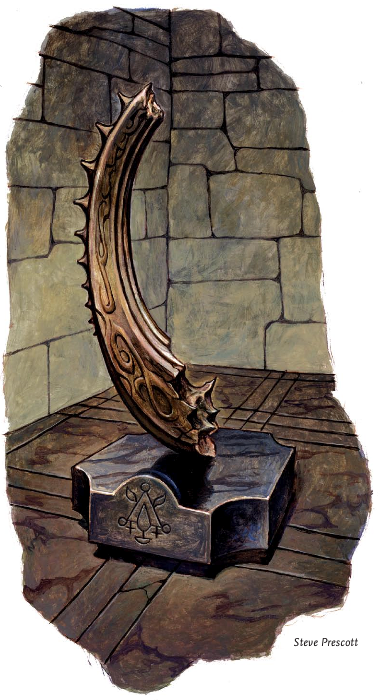
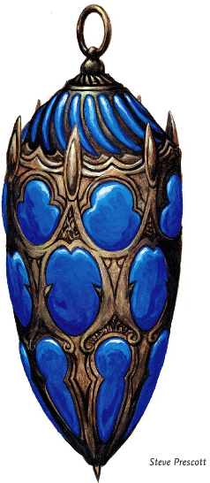

Week 2 - Into the Whispering Cairn, starting with an ancient puzzle.
Second game. Skulk has disappeared without leaving a note to explain why, so the remaining four ventured into the Cairn. At this point, Firth grew strangely quiet and withdrawn, and Arn the dwarf became a trifle more animated
Rest of this courtesty Steve.
The intrepid adventures proceeded down the long dark tunnel with the stalwart dwarf Arn and his faithful half-ogre sidekick Tom leading the way with their keen night vision. The stonework was unknown to the party and the architecture looked ancient and alien.
Further ahead the party found the remnants of an old sleeping bag, Flash then recalls the story of a missing girl, while relating the story to the others a faint green light ahead in the darkness caught the attention of Tom who without due caution strolled ahead to investigate.
The party followed and soon found in an alcove a dais with a long broken arc of a strange stone, Flash recovers some odd glass substance from the remnants. Opposite the alcove there is the remains of a cave-in though the party gave it little heed. Still following the pretty light Tom walked into an ambush set by three large wolves, without the intervention of Flash, Tom surely would have been torn a new one. Flash cast a spell that put the wild animals to sleep and Frith diligently healed Tom's grievous wounds.
In this large chamber there was a painting on the wall to the left and the wolves den was on the right. Searching the den Flash recovered an elven armband of fine work & an Indigo lantern. The green glow still beckoning appeared to be coming from down the web-covered stairs.
Heading down they entered a star shaped room with an ornate great sarcophagus in the centre, the sarcophagus had the effigy of a tall humanoid figure in stately robes, he looked human though was over seven feet in length and bald. The points of the room each held a rainbow coloured lantern, a couple of which were missing. It appeared that the Sarcophagus platform pivoted, by the large carved arrow surrounding the tomb. Tom ever-dumb opened the lid of the sarcophagus only to be hit with a fiendish fire trap, if only the party had had someone to find traps, the skulk they met previously probably could have helped, but he had disappeared shortly after he said hello.
{kind=link}
The party urged their muscle bound companion to turn the great dais, when the sarcophagus pointed to the unlit yellow lantern a cylinder popped out of the floor though no one was game enough to step into the odd contraption. The dais was turned again to the green lantern which was incidentally the source of the glow as Flash went to inspect the results the floor gave way and a swarm of Acid beetles & mad slasher poured from the ruined floor, Tom quickly disposed of the slasher but was engulfed by the swarm, he fled in pain and was saved by a colour spray from Flash. The party wounded and tired returned to town to heal and buy supplies.
Returning the next day they once again turned the dais this time to the Blue lantern, nothing seemed to happen, again to the Indigo when another cylinder popped up, Flash investigated to find crushed bones within. Flash then decided to go into the cylinder at the yellow lantern, as he entered the door closed and the cylinder sunk into the floor, he returned immediately and the party were all riding the elevator.
The elevator opened to a room with statues that appear to be beseeching the party in welcome, they looked similar to the carved effigy. A great stone blocked the exit from this room. With a mighty push Tom rolled back the stone causing the release of a noxious green gas, the party held their breath and ran through. In another corridor the party was attacked by an odd ropey ray-eyed floaty thing, it was soon dealt with by Arn's dwarven steel. The party then finds a sleeping chamber that Tom decides he should get 40 winks before moving on Tom also discovered the ablutions which he finds still work after a millennia of disuse.
Pulling a lever the Flash finds tool bench with a couple of wands, goggles of minute seeing, a shiny suit of chain mail. Still searching the team finds a strange brown mould that emanated a preternatural cold that froze the very air around it, the mould was inconveniently blocking entry to yet another room. Arn tried to burn it the growth but discovered that fire caused the mould to grow at a frightening rate and was soon overwhelmed by it freezing touch, Tom trying to rescue his friend also succumbed, Frith and Flash pulled the stricken pair out of harms way and the frost bitten party trudged home to recuperate.
Back in the village Flash enquired with Allustan to the nature of brown moulds and wise sage informed the young spell caster to use an offensive cold spell. Armed with this new information Frith knew what to do and prepared the necessary spell. Flash also made enquires into the strange glassy substance they'd found earlier. The next day the party returned and Frith dealt with the mould.
With the way clear the party discovered an ancient workshop within they found a humanoid statue sporting a long seven segmented rod and a red metal pedestal with a stone egg atop it. Tom touched the egg which promptly became a small earth elemental, in its harsh guttural tongue it yelled something at the party scaring Tom into smacking it with his great hammer, fortunately no one knew Terran and nothing was lost.
Having looted and vandalized this portion of the dungeon the party returned to the star shaped room and decided to descend into the hole which the beetles had emerged. Tom lowered the party down into the depths and quickly climbed down himself. They enter another statued room the sound of creepy crawlies were everywhere. Tom squashed yet another bug and found a humanoid corpse wearing leather armour with strange 8-pointed star on it . The party not wanting to fight swarms of bugs moved through the area only to find more stairs leading down to what appears to be a flooded bathroom